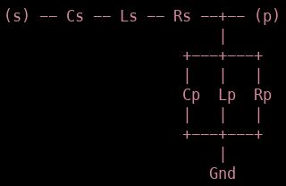
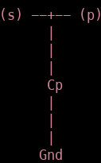

Introduction¶
Max voltage i.f.o distance¶
We’ll start by looking at a simple circuit, the code for such a circuit is given below and after that the code is explained line by line.
import matplotlib.pyplot as plt
from pyRFtk import rfCircuit, rfTRL, rfRLC
from pyRFtk import plotVSWs
TRL1 = rfTRL(L=1.1, OD=0.230, ID=[0.100, 0.130], dx=360) # a conical TL
TRL2 = rfTRL(L=1.1, Z0TL=40, dx=360)
TRL3 = rfTRL(L=2, ports=['E', 'T'], Zbase=40, dx=360) # <- just for fun
RLC2 = rfRLC(Cp=100e-12)
ct = rfCircuit()
ct.addblock('TL1', TRL1, ports=['T', 'E'], relpos=TRL3.L)
ct.addblock('TL2', TRL2, ports=['T', 'E'], relpos=TRL3.L)
ct.addblock('TL3', TRL3)
ct.addblock('Cap', RLC2, ports=['E','oc'], relpos=TRL3.L + TRL2.L)
ct.connect('TL1.T', 'TL2.T', 'TL3.T')
ct.connect('TL1.E', 'Cap.E')
ct.terminate('Cap.oc', Y=0) # open circuit !
ct.terminate('TL2.E', Z=10) # finite impedance
maxV, where, VSWs = ct.maxV(f=55e6, E={'TL3.E': 1})
plotVSWs(VSWs)
plt.show()
rfTRL makes a radio frequency Transmission Line (TL) object, it can be given various arguments:
L is the length of the TL section
OD is the outer diameter
ID is the inner diameter
Z0TL is the characteristic impedance
Zbase is the reference impedance of the S-matrix representing the TL section
dx is the dimensional step along the TL used to solve the telegraphist’s ODE.
As can be seen in the definition of TRL1, we create a conical TL by specifying an inner diameter at the leftmost side of 0.1 and an inner diameter at the rightmost side of 0.13.
rfRLC can build the following circuit structure:
the kwargs are:
Zbase : reference impedance [50 Ohm]
ports : port names [[‘s’,’p’]]
Rp : parallel resistance [+inf Ohm]
Lp : parallel inductance [+inf H]
Cp : parallel capacity [0 F]
Rs : series resistance [0 Ohm]
Ls : series inductance [0 H]
Cs : series capacity [+inf F]
Here we only implement a parallel capacitor, i.e:
Now that we have our building blocks, it’s time to put them together in a circuit. To do this we create a rfCircuit() instance which we’ll call ct and add the blocks.
The first block which we’ll add is TRL1 which we’ll call ‘TL1’, we’ll label the leftmost port ‘T’ and the rightmost port ‘E’. As a reference point we’ll use the length of TRL3, then we’ll connect both TRL2 and TRL3 to the same input port ‘T’ and output port ‘E’ (note that we have specified the ports of TRL3 already in the block itself).
Now we’ll add our T-section containing the parallel capacitor, we labeled the source (s) as “E” and the output (p) as “oc”. Afterwards we place this circuit part 1.1m away from the place where we put our transmission lines.
These ports now need to be connected, we first connect all the ports labeled “T” and then all the ports labeled “E”. We then proceed to leave the circuit open at the righthand side (Y=0 means zero admittance at oc) and place a 10 Ohm impedance at E, terminating the circuit there.
In the end, our circuit thus looks like:

Now we apply a signal to the point ‘TL3.E’ with a frequency of 55MHz, using maxV we can then get back maxV, which is the maximal voltage over the full circuit, where, which says where this happened and VSWs (Voltage Standing Waves) which is an array-like value containing data on how the voltage changes over the distance, this can then be plotted using plotVSWs. Note that this sets this software apart from other RF-circuitry applications such as cuqs where you may only know what happens at certain nodes, not over the whole circuit.
S-matrix¶
The program is capable of combining circuits and calculating the S matrix for certain frequencies, an example is given below:
from pyRFtk import rfCircuit, rfTRL
from pyRFtk.printMatrices import printMA
A = rfCircuit()
A.addblock('TL1', rfTRL(L=0))
A.addblock('TL2', rfTRL(L=0))
A.connect('TL1.1','TL2.1','TA')
B = rfCircuit()
B.addblock('TL1', rfTRL(L=0))
B.addblock('TL2', rfTRL(L=0))
B.connect('TL1.1','TL2.1','TB')
C = rfCircuit()
C.addblock('A', A)
C.addblock('B', B)
C.addblock('TL3',rfTRL(L=0))
C.connect('A.TA','B.TB','TL3.1')
printMA(C.getS(1E6))
Here we create a circuit C consisting of a transmission line of length 0, which has as an input (if no port names are given, 1 is the left input and 2 is the right output) of A and B, each of which are two 0 lenght coax cables of which the inputs are wired together.
We calculate the S matrix at 1MHz and print it using printMA, this funciton makes it posible to print complex matrices in easy to read format, e.g it will give an output 0.6 +180° impying
Multiple ports and Logging¶
from pyRFtk import rfCircuit, rfTRL, plotVSWs
from pyRFtk.printMatrices import printMA
from pyRFtk.config import setLogLevel
import matplotlib.pyplot as plt
TRL1 = rfTRL(L=1.1, ports=['1a','1b'])
TRL2 = rfTRL(L=2.1, ports=['2a','2b'])
CT1 = rfCircuit()
CT1.addblock('TRL1', TRL1, relpos= 0. )
CT1.addblock('TRL2', TRL2, relpos= 1.1 )
CT1.connect('TRL1.1b','TRL2.2a')
TRL3 = rfTRL(L=1.3, ports=['3a','3b'])
TRL4 = rfTRL(L=1.4, ports=['4a','4b'])
CT2 = rfCircuit()
CT2.addblock('TRL3', TRL3, relpos= 0. )
CT2.addblock('TRL4', TRL4, relpos= 1.3)
CT2.connect('TRL3.3b','TRL4.4a')
CT2.terminate('TRL4.4b', RC=0.5j)
CT3 = rfCircuit()
CT3.addblock('CT1', CT1, relpos= 0. )
CT3.addblock('CT2', CT2, relpos= 0. )
CT3.connect('CT1.TRL1.1a','CT2.TRL3.3a','ct1')
CT4 = rfCircuit(Id='Duh')
CT4.addblock('TRL5', rfTRL(L=2.5, ports=['5a','5b']), relpos= 0. )
CT4.addblock('CT3', CT3, relpos= 2.5 )
CT4.connect('TRL5.5b','CT3.ct1')
setLogLevel('DEBUG')
maxV, where, VSWs = CT4.maxV(f=45e6, E={'TRL5.5a':1, 'CT3.CT1.TRL2.2b':0.5})
setLogLevel('CRITICAL')
plotVSWs(VSWs)
plt.show()
Here we excite two ports: TRL5.5a with a 1V wave and CT3.CT1.TRL2.2b with a 0.5V wave. As can be seen in the code